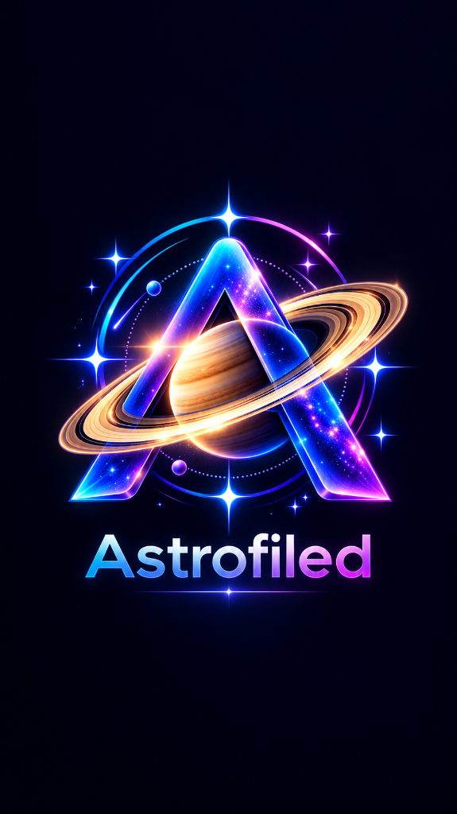

Engineered for real dark-sky expeditions. Real-time ephemeris calculations, authentic OpenNGC scientific targets, sensor framing simulation, and polar alignment—running completely on-device.
A transparent breakdown of the mathematics, catalogs, and APIs powering the application.
Local implementation of Don Cross’s Astronomy Engine. Performs real-time spherical trigonometry, nutation, refraction, and altitude/azimuth positions for your GPS coordinate.
Bundled with an on-device SQLite database containing thousands of Messier, NGC, and IC objects with verified J2000 coordinates, magnitudes, and angular dimensions.
Fetches authentic 7-day hourly astronomical seeing, cloud cover, humidity, and temperature data before you leave, then caches it for 100% offline access in the field.
Mathematical calculations for true sensor FOV, Dawes resolution limit, arcsec/pixel image sampling, and the NPF star-trailing rule for pinpoint exposures.
Everything you need under the stars, arranged for quick access with red-light vision protection.

Smooth animated splash sequence with native dark window styling to preserve your night-adapted eyes from startup.
Live illumination fraction, moon rise/set times, and angular separation calculations to maximize pristine moonless windows.
Preview your exact camera sensor dimensions and telescope focal length overlaid directly on real deep-sky target imagery.
Intelligent algorithms score deep sky objects right now based on altitude, horizon constraints, and lunar interference.
Accurate hour-angle reticle clock for Polaris (Northern Hemisphere) and Sigma Octantis (Southern Hemisphere). Matches your mount’s optical polar scope perfectly.
Plan multi-target exposure queues. Visualizes true astronomical darkness (-18°), target transit times, and German Equatorial Mount meridian flip deadlines.
Calibrated live compass & accelerometer guidance. Tap any catalog target to see directional arrows guiding where to point your optical tube.
Instant long-wavelength red filter overlay protecting scotopic rhodopsin vision during critical imaging nights at remote dark-sky parks.
Field optics calculators including maximum untracked exposure time before trailing, and relative humidity dew-point alerts to activate dew heaters in time.
Interactive expedition equipment checklist ensuring you never arrive at a Bortle 1 site 3 hours away only to realize you forgot your counterweights or T-ring.
A quick 4-step sequence for preparing and executing a successful night of imaging.
Tap Location & GPS in the sidebar. Tap "Auto-Detect GPS" or manually set your coordinates. Check Sun & Twilight to see the exact minute true astronomical darkness begins (Sun ≤ −18°).
Open Equipment and tap the "+" button. Enter your sensor width, sensor height, pixel pitch (μm), and telescope focal length (mm). AstroField automatically calculates your optical resolution (''/px) and field-of-view.
Browse the Catalog or check the Home screen for targets scoring above 80. Tap Framing Simulator to rotate your camera sensor angle (0°–360°) and compose your shot.
Level your equatorial mount and open Polar Alignment Clock. Position Polaris at the exact clock position shown on the dial. Then open Session Scheduler to track sub-exposures and meridian flips.